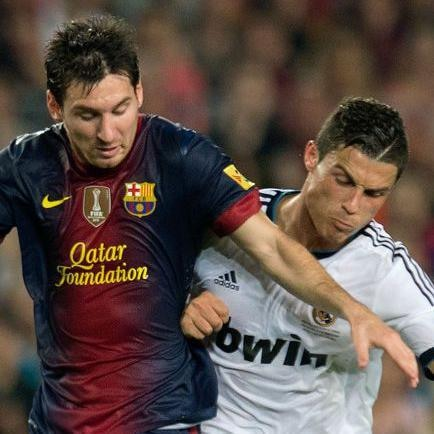

Stoking the Messi–Ronaldo Rift — 'I Cracked After Messi's World Cup Win'
The 2022 watershed: Messi led Argentina to the 2022 World Cup, completing the GOAT's final puzzle; while Ronaldo was reduced to a substitute in the knockouts and Portugal went out in the quarter-finals. That divergence settled the decade-plus Messi-Ronaldo argument, and Ronaldo's mentality crumbled entirely.
The Factos night meltdown: When Messi won his seventh Ballon d'Or in 2021, Ronaldo commented 'Factos' to publicly question it, mocked across the internet. This meltdown is regarded as the fuse that intensified the Messi-Ronaldo rivalry, sending his fans onto an irrevocable path of 'anti-Messi everything'.
Irreconcilable fan camps: On the Chinese internet the 'Ronaldo-stans' and 'Messi-stans' are like fire and water. At the 2022 final hordes of Ronaldo fans collectively backed France praying for Messi to lose; after Argentina won, they cooked up conspiracy theories like 'FIFA was fixed', 'penalty-Argentina' — sore losing taken to the limit.
Thierry Henry's critique cascades: On the eve of the 2026 World Cup Henry publicly criticised Ronaldo, reigniting the 'GOAT debate'. Indian media noted the Messi-Ronaldo rivalry had 'exposed the ugliest face of fan culture', with rational discussion drowned out by tribal abuse.
Re-ignited at the 2026 World Cup: At the 2026 US-Canada-Mexico World Cup, both Messi and Ronaldo are playing, reigniting the supposedly settled argument. Every touch, every goal by either is seized on by fans for comparison and put-down; the football itself becomes a sideshow.
Argentina loves Messi vs Portugal doubts CR7: First Post notes a striking asymmetry: Argentina universally worships Messi, while inside Portugal the doubts over Ronaldo have been growing — his role, his contribution, whether he should retire. Both national heroes, but the treatment is night and day.
The cost of the rivalry: When two great players are hijacked by their fans into symbols of 'holy war', football's beauty is consumed by endless point-scoring. Ronaldo probably never imagined that his rivalry with Messi would ultimately produce not who was greater, but the internal attrition and tearing apart of fan culture.